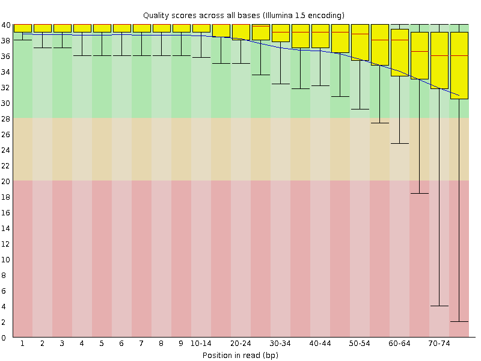
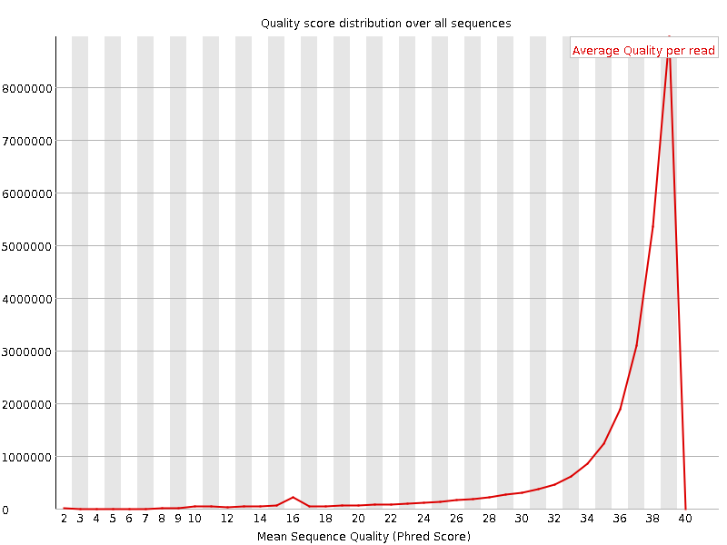
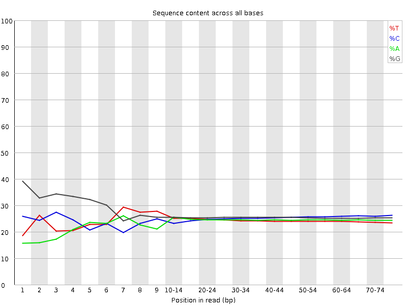
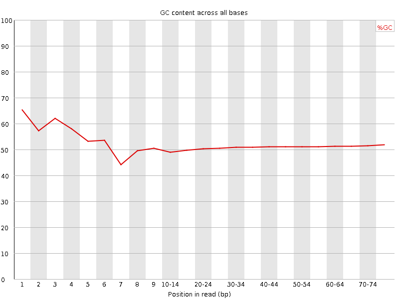
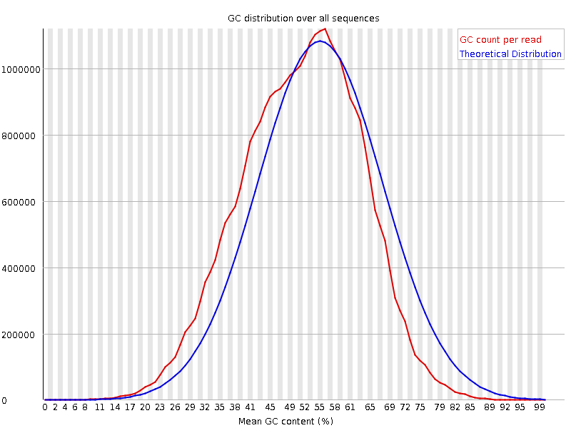
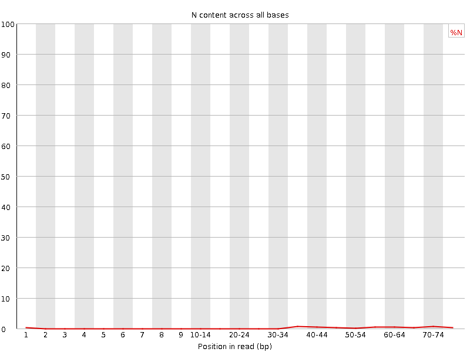
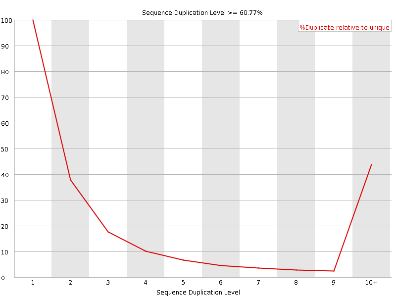
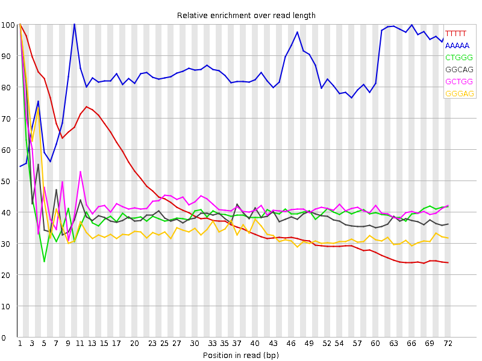

![[OK]](Icons/tick.png) Basic Statistics
Basic Statistics
| Measure | Value |
|---|---|
| Filename | SRR534321_1.fastq |
| File type | Conventional base calls |
| Encoding | Illumina 1.5 |
| Total Sequences | 25787086 |
| Filtered Sequences | 0 |
| Sequence length | 76 |
| %GC | 51 |
Per base sequence quality

Per sequence quality scores

![[FAIL]](Icons/error.png) Per base sequence content
Per base sequence content

Per base GC content

![[WARN]](Icons/warning.png) Per sequence GC content
Per sequence GC content

Per base N content

Sequence Length Distribution

Sequence Duplication Levels

Overrepresented sequences
No overrepresented sequences
Kmer Content

| Sequence | Count | Obs/Exp Overall | Obs/Exp Max | Max Obs/Exp Position |
|---|---|---|---|---|
| TTTTT | 9363820 | 5.96642 | 13.629247 | 1 |
| AAAAA | 6620980 | 4.2745385 | 5.1044655 | 10 |
| CTGGG | 4896275 | 2.4115727 | 6.054208 | 1 |
| GGCAG | 4827475 | 2.383943 | 6.008437 | 1 |
| GCTGG | 4548120 | 2.2400951 | 5.2370415 | 1 |
| GGGAG | 4113365 | 1.9554327 | 5.5295544 | 1 |
| TGGGG | 3970730 | 1.8826724 | 5.7737837 | 2 |
| GGGGG | 3813000 | 1.6791215 | 6.610514 | 1 |
| GGGGA | 3379445 | 1.606538 | 6.3575287 | 1 |
| GTGGG | 3091770 | 1.4659244 | 7.294491 | 1 |
| GGGGT | 2900700 | 1.3753309 | 5.5017653 | 1 |
| CGGGG | 2422235 | 1.1080562 | 5.1729784 | 1 |